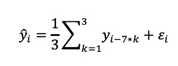

Table 1: MPTL-Table to document the modeling approach decision; The categories chosen can vary from use case to use case and client to client. You should however choose mutually exclusive categories.
1st of November 2021
In 2020, while the corona lockdowns were still hitting the world hard, an expanding restaurant chain took advantage of the time by developing a smart ingredient procurement system. Crayon was engaged to build and train a model that would meet the client's needs. I led this successful project and advised the client as solution architect. This article highlights the strategic approach I took in this data science project and provides a cursory peek on my thought process on model and metric selection.
A restaurant chain is purchasing almost all ingredients on demand, let it be chicken, ham, mushrooms etc. Orders are placed on a weekly
basis. Ingredient procurement is the processes of estimating demand and sending out orders to a supplier. This process - mainly done by
restaurant managers or dedicated procurement staff - is a valuable cog in the complex system of our clients' supply chain.
"How is the process done currently?"" you may ask. Procurement could be done centralized through the headquarter, but to be as efficient as
possible with the valuable resources, ingredient procurement is done decentralized for each restaurant individually. Since there are large
differences in the demand patterns of different meals for each restaurant, decentralized procurement ensures, that orders are placed while
considering all relevant factors. Each procurement manager is required to have a good intuition when it comes to demand of the different
meals and their ingredients. The demand of pepperoni pizza in one restaurant may differ vastly from the demand of the same pizza in another.
The current solution is solid; however, it has shown significant flaws over time. The process of analyzing past weeks demand, forecasting
upcoming weeks demand, and placing the orders requires substantial time and effort for the procurement personal. Mistakes will result in
either food waste or a stop in the sales which results in bad customer experience and a loss of revenue. Keep in mind that the loss in
revenue is slightly more critical to our client. This will be important when we introduce a business metric. Again, the main business
challenges are the labor costs for doing the forecasting and the loss of sales of entire products because a restaurant is running out
of ingredients.
We are engaged to develop a suitable solution to forecast ingredients to be purchased 14 days ahead for a defined number of restaurants. Even if the problem sounds quite well defined, it is not feature selection and engineering, training and validation alone making a professional data science project valuable for our client. Despite the short timeline for this project, our client expects a wholistic approach, that comprises - among others - tasks like ...
A data scientist will be interested in the data available. And obviously we are curious as well, since a solution is only as good as the data used as ground truth. Our client provides us with two data sources. The sales data (i.e. sold meals) on the one hand and the ingredient orders on the other hand. The structure of the data is clearly a time series, which allows us to focus on a subset of all potential models, i.e. time series forecasting.
In any data science project, model selection is not only a decision made with regards to the models' precision, but we must consider the complexity of tuning, latency, and scalability as well as model maintenance. I.e. how many hyperparameters are to be tuned? Does it add to the model performance without introducing too much complexity by choosing a more customizable model? What time needs to be considered to run and to recalibrate/retrain in production? We analyzed the models exponential smoothing (SES), ARIMA (Auto Regressive Integrated Moving Average), vector autoregression and the forecasting library FB-Prophet with regards to the above-mentioned dimensions. To underpin our decision, or just structure the process for a high-level model selection, I prefer to use a tool I like to call "MPTL" table.
Table 1: MPTL-Table to document the modeling approach decision; The categories chosen can vary from
use case to use case and client to client. You should however choose mutually exclusive categories.
Whether you use the MPTL table as your main criteria for model selection - or leverage it as an internal tool to shortlist the variety of models - is up to you. We chose to use it only internally, since the ranks were estimated according to experience and insights of the EDA. However, for other cases a decision based on qualitative ranks might not be sufficient. The final solution to choose the most promising candidate out of the short list is communicated and discussed in a touchpoint with the client in this case.
For this solution FB Prophet was chosen as a model to predict the ingredient demand. We do not want to explain the model in detail at this point, if you are interested in the technical details, the research paper "Forecasting at Scale" by Taylor and Letham is a good resource (https://peerj.com/preprints/3190/). Our decision is based on the fact, that the packaged model is very convenient to operationalize, it provides extensive documentation, since it is open source, anyone can find information very easily and can even reach out to the community. A built in decomposition feature offers data scientists to analyze the rational components like trend and seasonality of the trained model. For model management, e.g. it is very convenient to easily retrieve the weekly and yearly seasonality to analyze model changes and trigger alarms.
It is inevitable to have both, a clear metric, and a defined baseline, to measure a models' performance. This is the case for every data
science project we approach. Latest after the EDA, but prior to starting any modelling, this decision must be made. In some projects the
key metric, and the baseline model needs to be proposed by our data science team as an outcome of the EDA. In contrast other clients have
a clear objective how to measure and what the developed model shall be compared to. This project is of the second type. Since the client
has data experts on their side, it was requested to use MAPE (Mean Absolute Percentage Error) as a metric. From experience it turned out,
that looking only at the weakly seasonality was quite effective, so the baseline model was defined as a mean of the last three same
weekdays. I.e.

As an example, imagine you want to give a daily forecast for Friday on day i, you then just take a mean over the last three Fridays to
estimate the demand. This rather naive model was used as a baseline to compare any developed model to.
For proof of concept (PoC) purposes the training data sets were provided on Azure. The data was transformed, and the model was trained and validated in Notebooks on Databricks. Why Databricks? Databricks is a platform service, that makes it easy to run SQL queries or even ML tasks on Spark clusters. While for some ML applications this tooling might be overkill, it is very reasonable for the use-case we are facing. As the forecasting has to be trained and evaluated for time series of each individual restaurant and each individual ingredient, parallelization of this kind will result in great performance increase.
We are able to demonstrate a solid increase in predictive power is possible using the outlined ML approach. The relevant metric was improved by 18 percentage points compared to the baseline. However, the model built to make predictions is not a product yet. Not only the ingestion and inference pipelines are missing, but also the cluster setup shall be automized. The outputs have obviously to be persisted in a suitable blob storage or database to be accessed by other services. All these tasks are aggregated in a product backlog that was handed over with the project as a guide for the engineers who will deploy the model, as this was not part of this specific engagement.